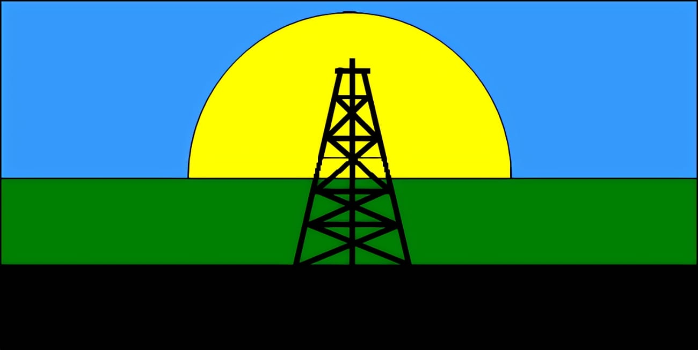

About Me
I’m Julio Cesar Pulgar from Cabimas, Venezuela. I work as an administrative coordinator at the Universidad Nacional Experimental Rafael María Baralt. I love reading, especially science fiction, and am passionate about software development. Thanks to BYUI, I’m excited to be pursuing my second career.
Cabimas, Venezuela

Cabimas, my hometown in Zulia, Venezuela, is known for its key role in the Venezuelan oil industry. Founded in 1937, the city has a warm climate, rich traditions, and vibrant festivals. The oil industry still drives the economy, but local life is shaped by the people’s culture. The picturesque views of Lake Maracaibo and surrounding nature add to its charm.